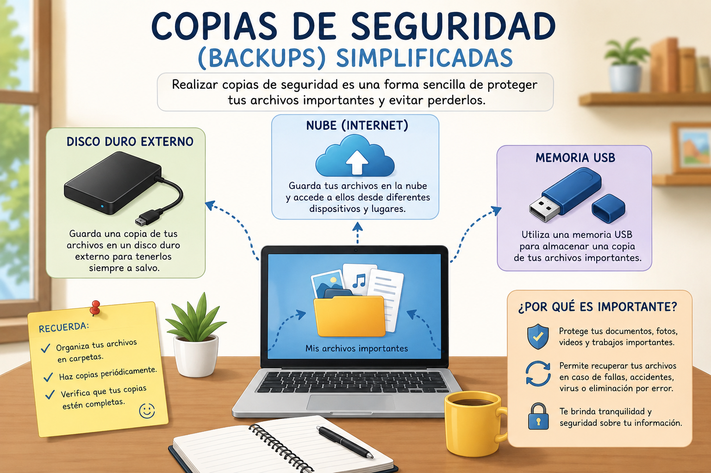

ARTÍCULO TÉCNICO
Copias de seguridad (Backups) simplificadas
Introducción
Las copias de seguridad, también conocidas como backups, son una forma de proteger los archivos importantes que tenemos guardados en nuestros dispositivos. Actualmente, gran parte de nuestra información se encuentra almacenada en computadores, celulares y otros equipos tecnológicos. Allí podemos tener documentos personales, trabajos académicos, fotografías, videos, proyectos y muchos otros archivos que pueden ser importantes. Sin embargo, en cualquier momento puede ocurrir un problema que provoque la pérdida de esa información.
Un computador puede presentar fallas, dañarse por un accidente, ser afectado por un programa malicioso o simplemente dejar de funcionar. También puede ocurrir que eliminemos un archivo por error y después necesitemos recuperarlo. Por estas razones, es importante no guardar toda nuestra información en un solo lugar. Tener una copia adicional permite recuperar los documentos en caso de que ocurra algún inconveniente.

Una de las formas más sencillas de hacer una copia de seguridad es utilizar una memoria USB o un disco duro externo. En estos dispositivos podemos guardar una copia de nuestros archivos más importantes. También existen servicios de almacenamiento en la nube, que permiten guardar información por medio de internet y acceder a ella desde diferentes dispositivos.
Es recomendable organizar los archivos antes de realizar una copia de seguridad. Se pueden crear carpetas para documentos personales, trabajos académicos, fotografías, videos y otros contenidos. De esta manera, será más fácil encontrar la información cuando sea necesario. También es importante realizar copias de seguridad periódicamente, especialmente después de crear o modificar documentos importantes.
Realizar copias de seguridad es una práctica sencilla que puede evitar muchos problemas. No es necesario esperar hasta que un equipo se dañe para pensar en proteger la información. Tener el hábito de guardar copias de nuestros archivos nos permite estar preparados y mantener nuestros documentos importantes más seguros.